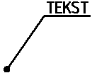

mogelijkheid met pijl
Bijschriften horizontaal plaatsen.
Aanhaallijnen voorzien van een gesloten pijlpunt van 2,5 mm of een bolletje met een diameter van 1 mm.
De verwijzingslijn met tekst wordt getekend d.m.v. een lijn met een lengte afhankelijk van de bijgeplaatste tekst met de tekst boven de referentielijn.
Dit conform NEN-ISO 128-22:1999.
Het
voor bijschriften heeft een letterhoogte van 2,5 mm.
voorbeelden:
mogelijkheid met pijl

mogelijkheid met bolletje